<title>Wall-Grid Pilot</title>
<meta name="claude:viewport-fit-sides" content="cover">
<link rel="stylesheet" href="https://fonts.googleapis.com/css2?family=Barlow+Condensed:wght@500;600&family=Barlow:wght@400;500;600&display=swap">
<style>
/* Layout: a contact sheet. Before/after pairs side by side (stacked on a phone), then the room tour in a two-up grid. */
:root { --paper: #eef1ef; --sheet: #fbfcfb; --ink: #1c2321; --muted: #5d6864; --rule: #cfd6d3; --ok: #2f8f5b; --accent: #2457c5;
  --display: "Barlow Condensed", "Arial Narrow", sans-serif; --body: "Barlow", system-ui, sans-serif; }
@media (prefers-color-scheme: dark) { :root:not([data-theme="light"]) { --paper: #111514; --sheet: #171c1b; --ink: #e2e8e5; --muted: #95a29d; --rule: #2c3533; --ok: #4fbf84; --accent: #7aa2ff; color-scheme: dark } }
:root[data-theme="dark"] { --paper: #111514; --sheet: #171c1b; --ink: #e2e8e5; --muted: #95a29d; --rule: #2c3533; --ok: #4fbf84; --accent: #7aa2ff; color-scheme: dark }
body { background: var(--paper); color: var(--ink); font: 16px/1.55 var(--body); padding-left: max(16px, env(safe-area-inset-left, 0px)); padding-right: max(16px, env(safe-area-inset-right, 0px)); padding-block: 20px 40px; }
main { max-width: 1100px; margin: 0 auto; display: grid; gap: 28px; }
h1 { font: 600 34px/1.1 var(--display); margin: 0; text-wrap: balance; }
h2 { font: 600 22px/1.2 var(--display); margin: 0 0 10px; letter-spacing: .01em; }
p { margin: 0; max-width: 68ch; }
.lead { color: var(--muted); margin-top: 6px; }
.checks { display: grid; grid-template-columns: repeat(auto-fit, minmax(150px, 1fr)); gap: 10px; }
.checks div { background: var(--sheet); border: 1px solid var(--rule); border-top: 3px solid var(--ok); border-radius: 3px; padding: 8px 10px; }
.checks b { font: 600 22px var(--display); display: block; }
.checks span { font-size: 13px; color: var(--muted); }
.pair { display: grid; grid-template-columns: 1fr 1fr; gap: 8px; }
@media (max-width: 700px) { .pair { grid-template-columns: 1fr; } }
figure { margin: 0; background: var(--sheet); border: 1px solid var(--rule); border-radius: 3px; overflow: hidden; }
figure img { display: block; width: 100%; height: auto; aspect-ratio: 16 / 9; object-fit: cover; }
figcaption { font-size: 13.5px; color: var(--muted); padding: 6px 10px; }
figcaption b { color: var(--ink); font-weight: 600; }
.tag { font: 600 11px var(--display); letter-spacing: .08em; text-transform: uppercase; color: var(--muted); }
.block { display: grid; gap: 10px; }
.tour { display: grid; grid-template-columns: 1fr 1fr; gap: 10px; }
@media (max-width: 700px) { .tour { grid-template-columns: 1fr; } }
ul { margin: 0; padding-left: 20px; max-width: 68ch; }
li + li { margin-top: 4px; }
</style>

<main>
  <header>
    <h1>Wall-Grid Pilot</h1>
    <p class="lead">The upstairs rebuilt the way a house is framed: one shared 5½ in wall between rooms, one floor, ceilings per room, doors and windows cut into the walls. Grey-box only (no wallpaper or furniture yet), daylight on.</p>
  </header>

  <section class="block">
    <h2>What the checks say</h2>
    <div class="checks">
      <div><b>0</b><span>gaps or slivers between walls</span></div>
      <div><b>0</b><span>ledges or jogs (the two known ones are gone)</span></div>
      <div><b>0</b><span>overlapping surfaces (no flicker)</span></div>
      <div><b>0</b><span>light leaks in 500 probes</span></div>
      <div><b>0 of 80</b><span>room walks blocked (Kevin and a bandit)</span></div>
    </div>
  </section>

  <section class="block">
    <h2>Before and after, from your note spots</h2>
    <p class="tag">Left: today's build · Right: the pilot</p>
    <div class="block">
      <div class="pair">
        <figure>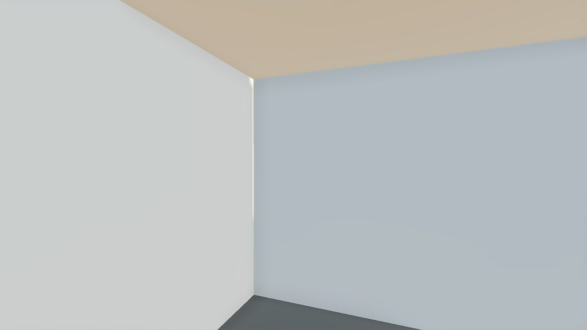<figcaption><b>Today.</b> Parents' bedroom corner: daylight through the slit where two walls failed to meet.</figcaption></figure>
        <figure>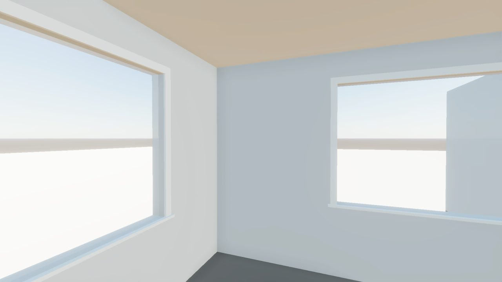<figcaption><b>Pilot.</b> The corner is solid. The windows from the survey are in.</figcaption></figure>
      </div>
      <div class="pair">
        <figure>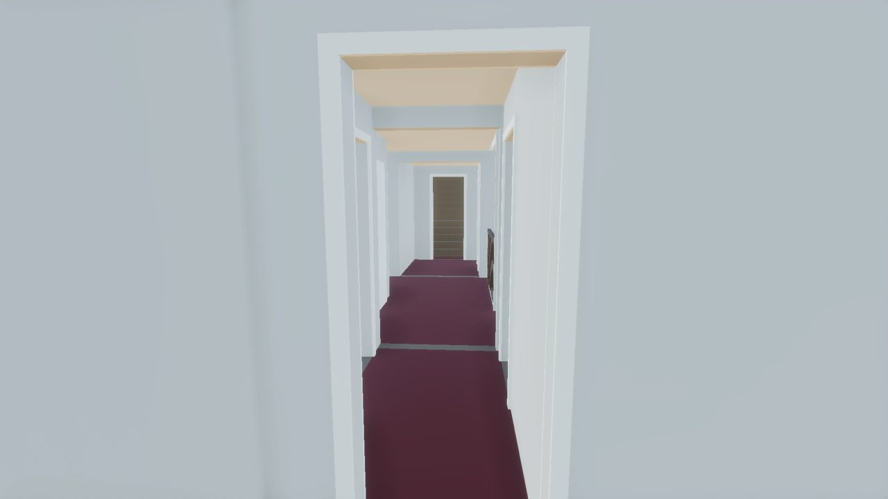<figcaption><b>Today.</b> Where you saw the blue gaps between rooms.</figcaption></figure>
        <figure>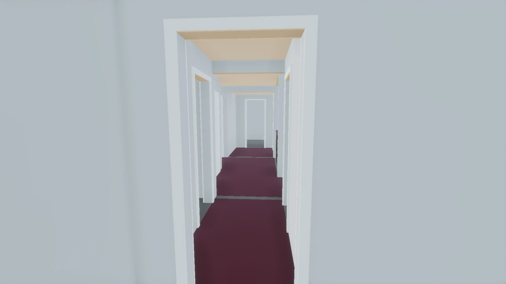<figcaption><b>Pilot.</b> One continuous floor. The thin wood strip at each doorway is the threshold inside the wall.</figcaption></figure>
      </div>
      <div class="pair">
        <figure>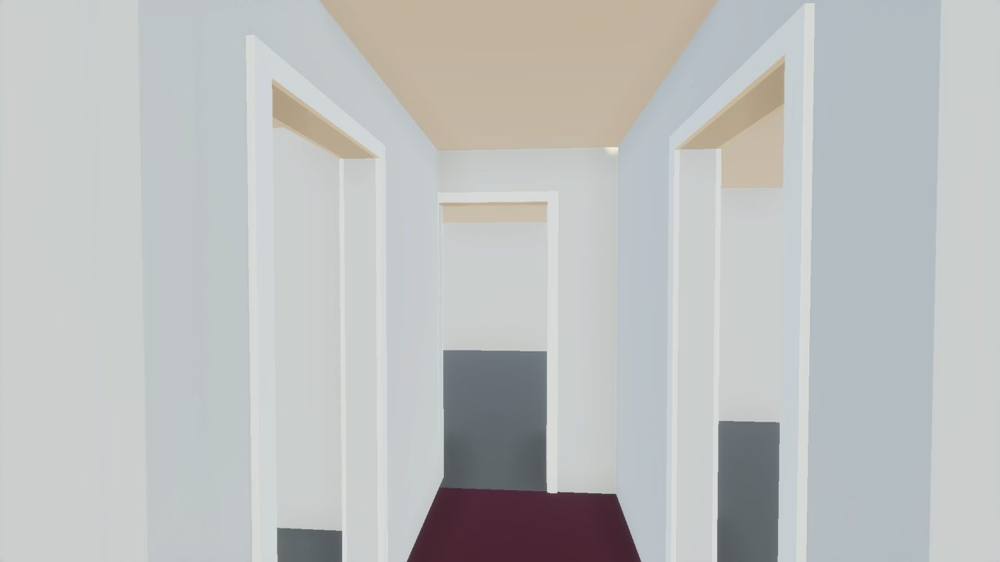<figcaption><b>Today.</b> Down the hall to the parents' door.</figcaption></figure>
        <figure>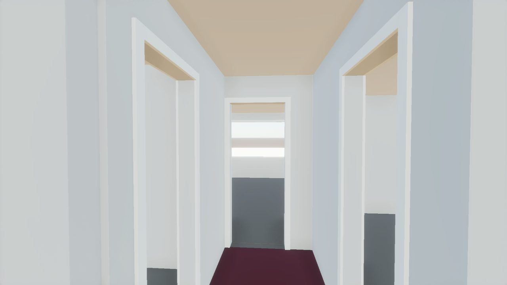<figcaption><b>Pilot.</b> The door's trim now just meets the left wall, as in the film (10819); the parents' front window shows through.</figcaption></figure>
      </div>
      <div class="pair">
        <figure>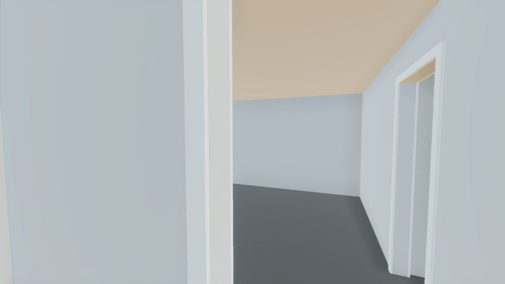<figcaption><b>Today.</b> Kevin and Jeff's room from the hall.</figcaption></figure>
        <figure>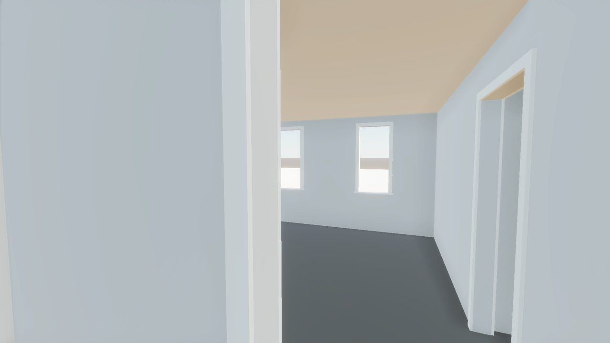<figcaption><b>Pilot.</b> Same room, now with its two front windows.</figcaption></figure>
      </div>
    </div>
  </section>

  <section class="block">
    <h2>Room tour</h2>
    <div class="tour">
      <figure>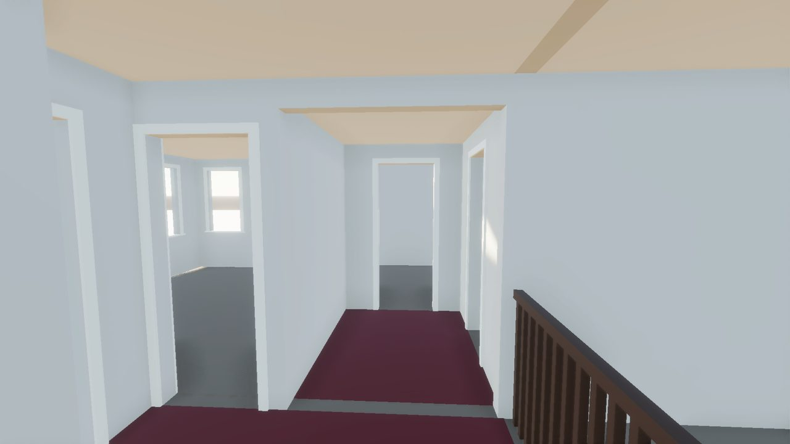<figcaption><b>Hall</b> toward the bathroom; the stairwell rail at right. The ceiling now runs over the rail.</figcaption></figure>
      <figure>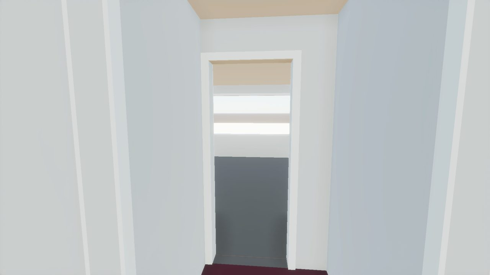<figcaption><b>Parents' door</b> from the hall end.</figcaption></figure>
      <figure>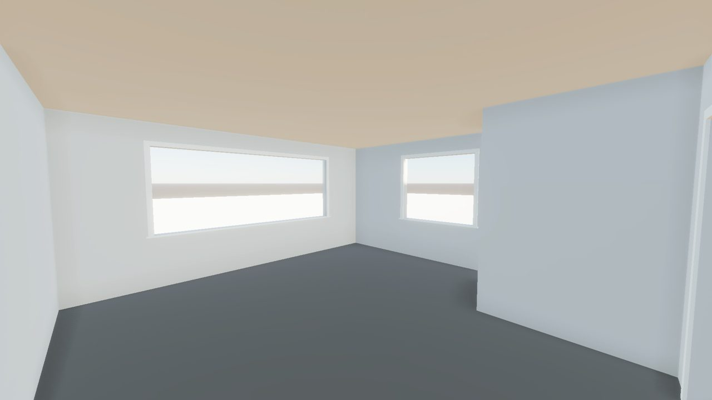<figcaption><b>Parents' bedroom</b>, 4 in larger on the Kevin side (your call).</figcaption></figure>
      <figure>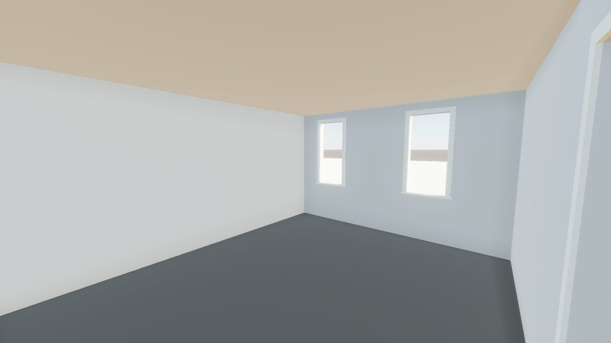<figcaption><b>Kevin and Jeff's room.</b> The desk-side window is the low-confidence one.</figcaption></figure>
      <figure>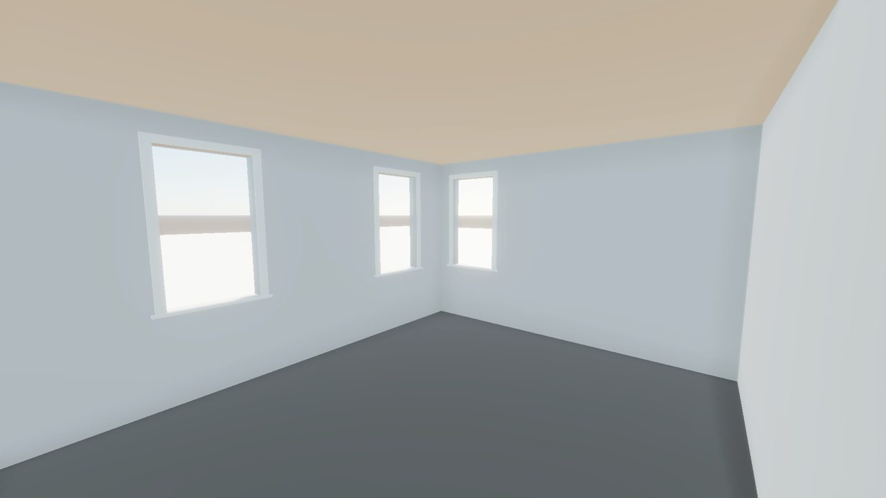<figcaption><b>Buzz's room</b> with its three windows. His door moved 2.8 in to fit its trim.</figcaption></figure>
      <figure>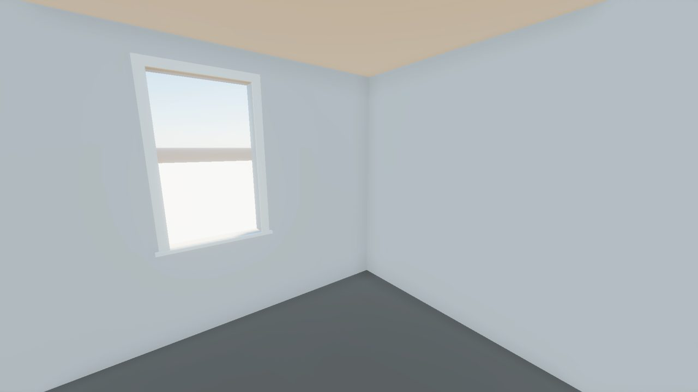<figcaption><b>Hall bathroom</b>, 3.8 in shallower: its wall now sits behind the measured hall wall.</figcaption></figure>
      <figure>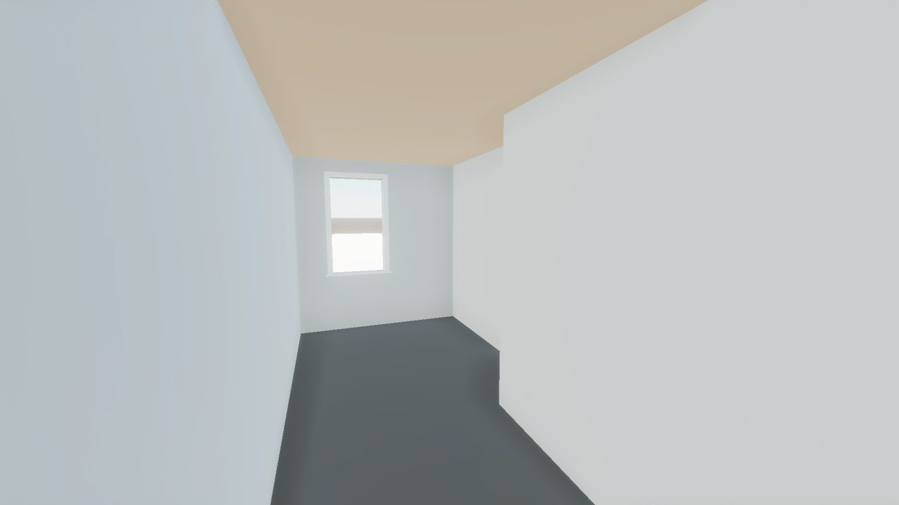<figcaption><b>Girls' room A.</b> Its window is read from the overhead only.</figcaption></figure>
      <figure>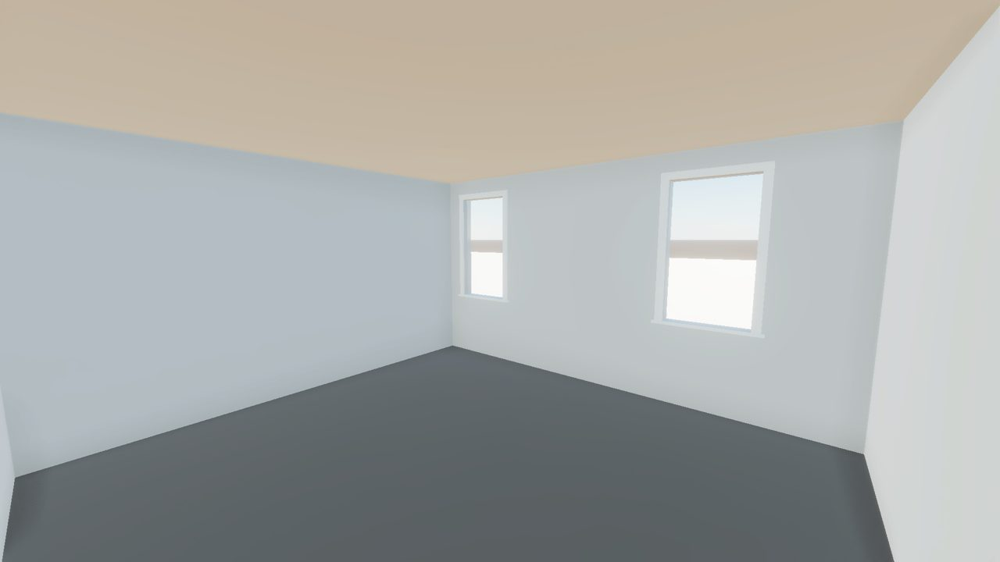<figcaption><b>Girls' room B</b> (the one behind Buzz's), at its new 13 ft 4 in depth.</figcaption></figure>
    </div>
  </section>

  <section class="block">
    <h2>Not in the pilot yet</h2>
    <ul>
      <li>No stairs: the stairwell is a hole with no main floor beneath it, and the attic door opens onto nothing.</li>
      <li>Plain walls and floors: wallpaper, trim colours and furniture come back after the rebuild.</li>
      <li>Daylight is not baked yet, so walls read a little blue and flat.</li>
      <li>Over the stair rail the ceiling meets a short wall-coloured header, flush with the ceiling.</li>
    </ul>
    <p>When you are back: it is loaded in your editor (scene Pilot_WallGrid). Next steps are the foyer from the film, then the stair hall.</p>
  </section>
</main>
